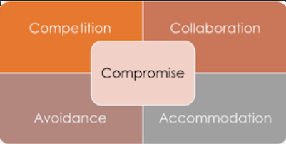

Lets talk $ lets listen is designed to,
challenge personal perspectives, dismantle world veiws &
misconceptions inwhich opens doors for: strife,miscommincation
and envitably promote....
Grudges
Bitterness
Hatred
Broken relationships
Emptiness
unresolved conflicts, not only put stress and strain on
the different dimensions of human relations, they also effect are
physical, spiritual and emotional well beingy

Here are 5 steps of encouragement.
Reflect on the root of the conflict,how has words,traumas,and preconcieved notions effected your quality of being?
Use lets talk lets listen with an open mind and receptive heart.
I challenge users to go beyond emotional confort.
caution! try to avoid approaching this website as a social media,
we're here to heal and grow not uproot or destroy
Know that you're not looking to be validated; more so,the fact you're contributing to resolution is greatly benefitcial and productive. you cant put a price tag on healing
Spread the energy:love, compassion and forgiveness is not something we are born with; however,it can spread and become contagious,B,T.W. this is a cancer we want 2 spread
Prepare yourself to come out of your comfort zone, be Courageous!! Having Courage is being able to look your giants in the face.
It wont be easy, anything worth slaying or overcoming is never easy; however, it is life changing and fullfilling